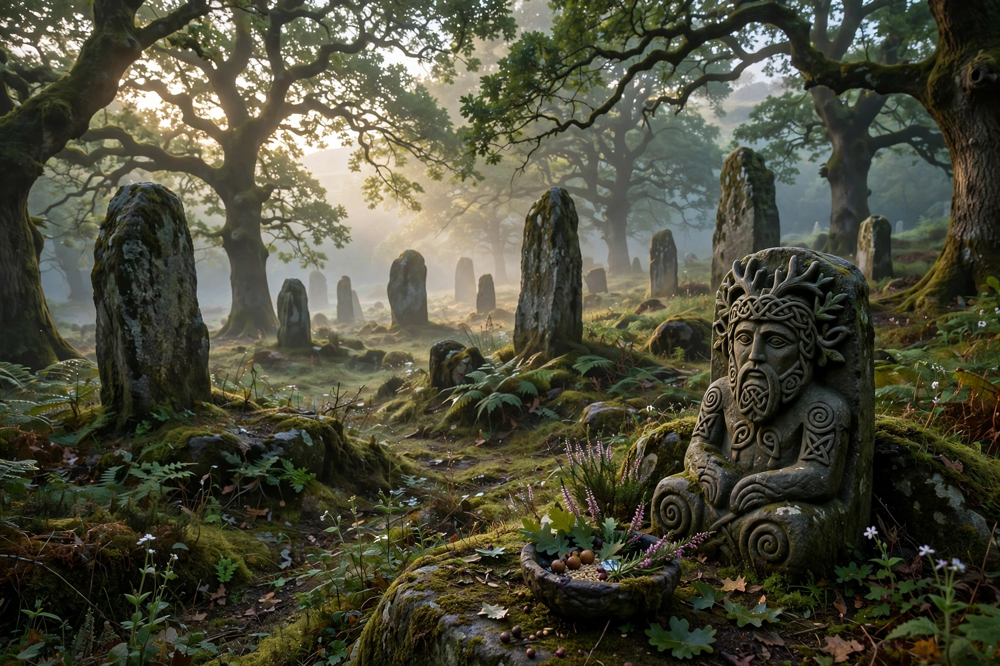

Celtic polytheismCeltic polytheism, commonly known as Celtic paganism, comprises the religious beliefs and practices adhered to by the Iron Age people of Western Europe now known as the Celts, spanning roughly 500 BC to 500 AD in Britain and Ireland and longer under Roman rule in Gaul.
The Celts worshipped hundreds of deities, many local to tribes or places; some were widespread, like Lugus, the horse goddess Epona, and the horned god Cernunnos depicted on the Gundestrup cauldron. Worship took place in sacred groves, at springs and in temples; offerings included weapons deposited in rivers and, according to Roman sources such as Caesar and Strabo, occasionally human sacrifice supervised by the druid priestly class. Belief in an afterlife and transmigration of souls is reported by classical authors.
The Celts left no religious texts of their own from the pagan period; knowledge comes from Roman ethnography (biased by interpretatio romana), archaeology, and later Irish and Welsh literature written in Christian times, preserving mythic figures such as the Tuatha Dé Danann.
Christianisation absorbed many sites and festivals. Modern Celtic neopaganism and reconstructionism draw on this heritage.